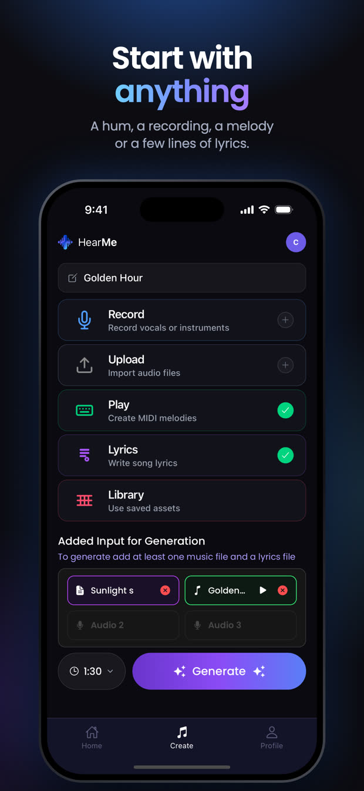
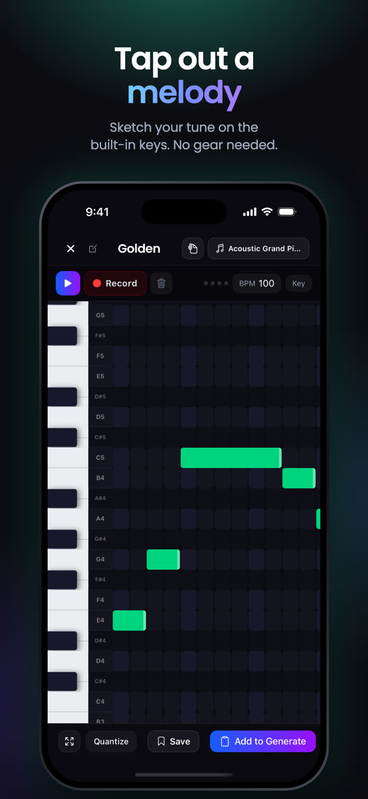
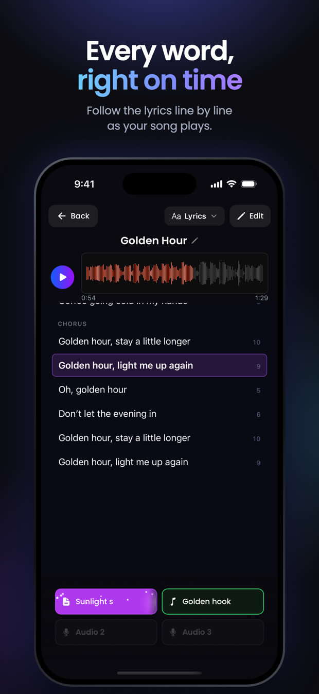
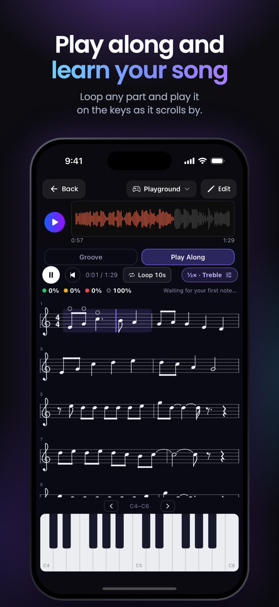

You record something, play it on the keyboard, or write words. HearMe returns a full arrangement built around what you gave it — separable stems, chords, and lyrics aligned in time, with a play-along mode so you can perform against your own song. It is shipped and on the App Store.
I am the sole engineer on the mobile client, 200+ commits and counting. I joined for a 150-hour summer term and have stayed on the team since, meeting weekly with the group and separately with Prof. Weinberg.




The piano and drum interfaces run on a Web-Audio-style engine I built in React Native with sample-accurate scheduling. Touch-to-sound has to be tight enough that the keyboard reads as an instrument and not a remote control, which rules out scheduling notes off JavaScript timers. Generated results render offline through the same MIDI path, so what you hear back is produced by the engine you played into.
Generation takes minutes and happens on a server, which shapes everything on the client. The full input path — recording, upload, keyboard capture, lyric entry, selection windows — feeds the service, and a background watcher survives app suspension so the song finishing does not depend on the app staying open. You get a notification instead.
The result view puts a single transport across stems, chords, time-aligned lyrics and play-along, with version history per project, so a song is a thing you revise rather than a thing you re-roll.
The model lives on a Georgia Tech server, so from the client it is effectively a black box. A lot of the work became designing honestly around what it returns. That experience is most of why I now want to work on the parts of audio you can measure and control — signal processing and real-time systems — rather than on generation.